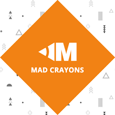

Hello
I'm Sunil Guntupalli
Software Engineer | Cloud Management | Data Analysis | Full-Stack Development
Download ResumeAbout Me
Hi, I'm Sunil Guntupalli, a versatile professional with expertise as a Data Analyst, Cloud Engineer, and Full Stack Developer. I am currently pursuing a Master’s degree in Computer Science at the University of Cincinnati, where I am expanding my knowledge in cutting-edge technologies and software engineering principles.
My professional experience includes significant roles at Motorola Solutions and Deloitte. At Motorola Solutions, I contributed as a Data Analyst and Full Stack Developer, focusing on optimizing data pipelines and building responsive web applications. At Deloitte, I served as a Cloud Engineer, where I was involved in deploying and managing cloud infrastructure, enhancing the scalability and security of client applications.
Skills
Programming Languages: Advanced in Python, Java, JavaScript, C++, C, PHP
Data Analysis & Visualization: Statistical Analysis, Predictive Analytics, Data Visualization (Tableau, Power BI), Data Mining, Dashboards & Reporting, Matplotlib
Data Management: SQL, MySQL, MongoDB, CouchDB
Full-Stack Development: Django, Vue.js, Node.js, REST APIs, Bootstrap, HTML, CSS
Cloud Computing: Azure, AWS, Google Cloud Platform
DevOps & CI/CD: Docker, Kubernetes, Agile Methodologies, Continuous Integration and Development
Tools & Technologies: Elasticsearch, Postman, Jenkins, Jupyter Notebooks, GitHub, Robotic Process Automation, SailPoint, ServiceNow, XAMPP
Work Experience
 Software Engineer | Motorola Solutions
Software Engineer | Motorola Solutions
June 2021 – July 2023
At Motorola Solutions, I enhanced a deployment platform for over 100 clients and partners using Azure Management Services. This optimization of project provisioning and resource allocation resulted in more than $1.2 million in cost savings and a 25% improvement in operational efficiency.
I led the transition of over 1,000 data sets from Excel to MySQL, CouchDB, and Access DB. This migration improved data handling efficiency by 90%, streamlined data management processes, and increased data accessibility and reliability.
Furthermore, I designed and integrated advanced data visualization and analysis features using Vue.js, Angular, and Node.js. This development enhanced user experience and application performance by 30%, providing actionable insights through interactive dashboards and real-time updates.
Utilizing Azure, Docker, and Kubernetes, I managed cloud operations for more than 50 projects. This effort achieved seamless deployment, scalable solutions, and enhanced system reliability, contributing to a 40% increase in efficient resource management.
Additionally, I applied data analysis to automate processes across 500+ projects. This automation reduced manual efforts by 60%, improved workflow efficiency, and increased overall productivity.
 Technology Intern | Deloitte
Technology Intern | Deloitte
Jan. 2021 – April 2021
During my time at Deloitte, I leveraged SailPoint IdentityIQ to manage user identities for over 200 users. This approach improved data security and streamlined user provisioning and de-provisioning processes, resulting in a 20% increase in compliance and system efficiency.
I conducted detailed data analysis and generated weekly performance reports for more than 10 projects. These reports provided actionable insights that identified trends and supported data-driven decision-making, enhancing operational performance by 15%.
Additionally, I implemented Java solutions and utilized XML within SailPoint to automate over 50 identity management processes. This automation reduced manual intervention and enhanced system functionality, leading to a 25% increase in operational effectiveness.
I also utilized Git and GitLab for version control and project tracking. This ensured accurate progress and effective collaboration on more than 5 development tasks, facilitating smooth project execution, timely updates, and seamless team integration.
 Web Development Intern | Mad Crayons
June 2020 – July 2020
At Mad Crayons, I contributed to the development of the company website using PHP and Laravel. This work significantly improved site functionality and loading speeds by 50% through optimized code, efficient database management, and streamlined server configurations.
I managed user data with MySQL and utilized XAMPP for local development. This approach led to a 30% improvement in data handling, site stability, and overall performance, resulting in enhanced user satisfaction based on comprehensive data analysis.
Education
Master of Engineering in Computer Science
University of Cincinnati
Aug. 2023 – Expected Dec. 2024
GPA: 3.92
Relevant Coursework: Intelligent Data Analysis, Cloud Computing, Operating Systems, Advanced Algorithms
Bachelor of Technology in Computer Science
Koneru Lakshmaiah Education Foundation
July 2018 – May 2022
GPA: 3.74
Relevant Coursework: Algorithms, Data Science, Software Development, Programming, Artificial Intelligence
Projects
Description: Deployed a scalable web server solution on AWS EC2 for a secure user registration system, featuring interactive functionalities and data storage.
Description: Utilized Python within a Docker container to process and analyze text files, providing detailed word count statistics and data extraction capabilities.
Description: Developed a chatbot on Google Cloud Platform (GCP) using Dialogflow to handle college inquiries, offering an interactive and responsive system for student engagement.
Description: Analyzed large-scale weather datasets with PySpark on Anaconda and Jupyter Notebook, identifying significant weather patterns and statistical trends.
Description: Conducted comprehensive data analysis and visualization on various datasets using Databricks Community Edition, generating actionable insights.
Description: Designed a C-based platform for managing movie bookings, including ticket selection, reservation, and purchase functionalities.
Description: Developed an interactive Tic-Tac-Toe game in Python, featuring advanced game logic and user interaction capabilities.
Description: Created a Django-based system for efficient management of certificates, including issuance, verification, and status tracking functionalities.